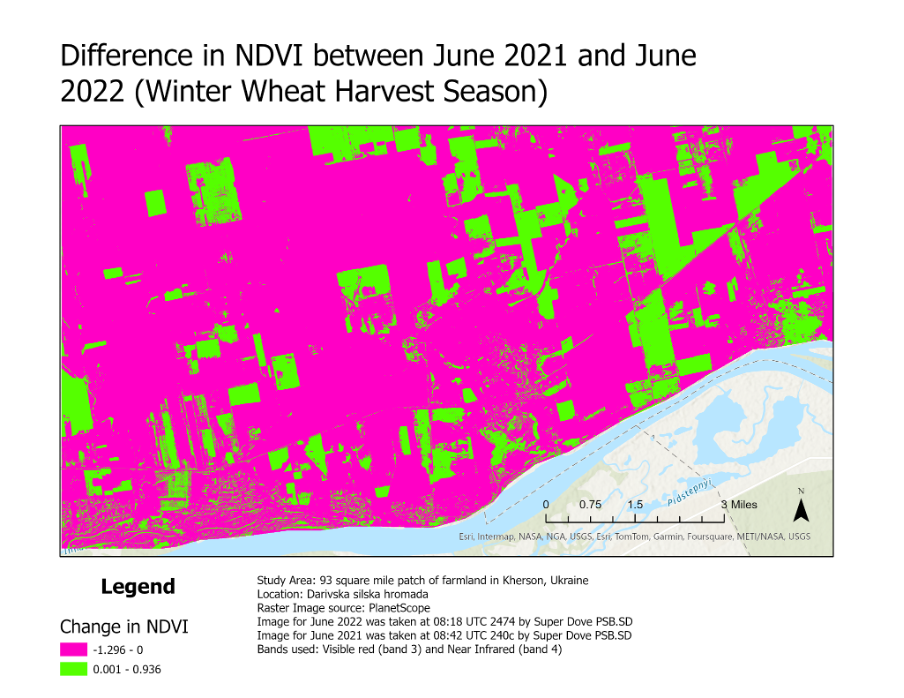
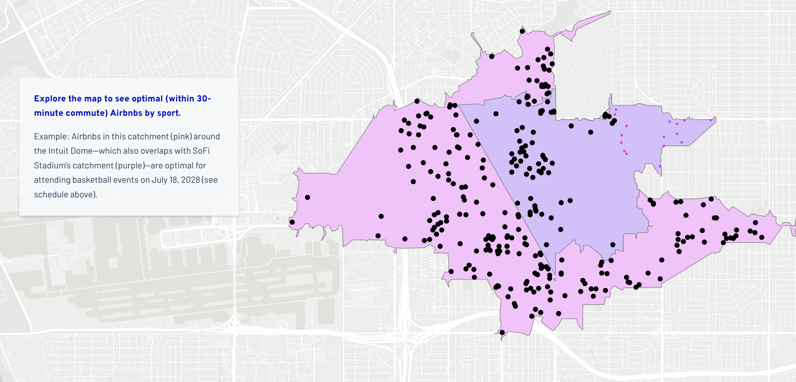
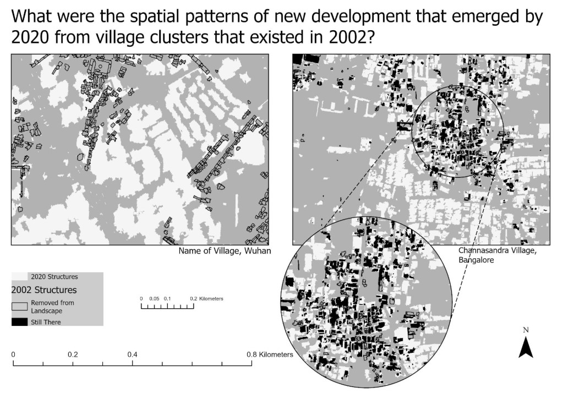

Portfolio prepared for Planet — Data Visualization Engineer
Shivi Anand
Geospatial Data Visualization & Remote Sensing
Turning satellite imagery and spatial datasets into visual stories for technical and public audiences —
NDVI change detection with PlanetScope and Sentinel-2 imagery, AI-assisted interactive mapping tools, and
cartographic storytelling for planners, officials, and researchers. Five projects spanning remote sensing,
renewable energy siting, public infrastructure planning, and comparative urban satellite analysis.
Remote Sensing · Multispectral Imagery · Conference Presented
Ukraine's Abandoned Farmland Quantified Using Satellite Imagery
Undergraduate Researcher · Conference Presenter · USC Spatial Sciences Institute · Aug 2023 – May 2024

Add screenshot: images/ukraine-ndvi.png
'">
Impact
Following the 2022 Russian invasion, Ukraine — one of the world's largest grain exporters — faced
catastrophic disruption to agricultural production. This research quantified the extent of farmland
abandonment using satellite imagery, contributing evidence-based findings to the global conversation on
food security. Findings were presented at the 2024 American Association of Geographers Annual Conference
and the LA Geospatial Summit — translating raster analysis into a visual narrative for a mixed technical
and public audience.
Approach
Analyzed multispectral PlanetScope SuperDove and Sentinel-2 imagery using NDVI indices to detect and
classify changes in agricultural land use before and after conflict. A six-year NDVI time series
(2018–2023) was constructed to distinguish conflict-driven abandonment from seasonal variation across a
93 square mile study area in Kherson, Ukraine, and rendered as a comparative change map for presentation.
Key Tools & Techniques
PlanetScope Imagery
Sentinel-2
NDVI Analysis
Raster Change Detection
Time Series Analysis
ArcGIS Pro
AI-Assisted Geospatial Tooling · Interactive Web Mapping
WindSite AI — Wind Farm Siting Platform, Nebraska
GIS Analyst / Project Lead · DOE Collegiate Wind Competition, 2nd Place Nationally · Dec 2025 – Present
View Live Tool — WindSite AI →

Impact
Nebraska has significant untapped wind energy potential, but utility-scale development requires
navigating competing land-use constraints across 93 counties. Beyond the underlying suitability model,
this project built a public-facing interactive tool that renders scored results as an explorable map
rather than a static report — giving developers and reviewers a way to see the data, not just read about it.
Approach
Built a full-stack geospatial ML platform automating wind farm suitability analysis end-to-end. Ingested
five data layers — Global Wind Atlas, HIFLD transmission lines, ESA Sentinel land use/land cover, USGS
elevation, and the US Wind Turbine Database — via REST API, trained a Random Forest classifier to weight
variable importance across all 93 counties, and rendered scored suitability maps in an interactive web
map with Mapbox GL JS. Integrated the Claude API to auto-generate structured, plain-language site briefs
directly from model outputs.
Key Tools & Techniques
Python (scikit-learn, ArcPy)
Mapbox GL JS
Claude API
Random Forest Classification
REST API Integration
ArcGIS Pro / ModelBuilder
Interactive Storytelling · Public-Facing Cartography
Where Will the World Stay? Mapping Visitor Stays for LA28
Project Manager, GIS Analyst & Co-Author · Team of 6 · January 2026

Add screenshot: images/la28-visitor-stays.png
'">
Impact
With over 15 million visitors expected for the 2028 Los Angeles Olympics, this project addressed a
critical planning gap: where will visitors actually stay, and can they reach venues without a car? The
analysis produced a scalable, replicable methodology now available to LA28 planners and city officials,
delivered as an interactive story map built for a non-technical, public audience.
Approach
Using Airbnb listing data and simulated LA Metro transit networks, the team identified Airbnb listings
within 30-minute transit catchments of each Olympic venue, disaggregated by sport. The methodology
combined network analysis and spatial joins, then translated the results into an interactive ArcGIS
StoryMap so a reader could explore optimal lodging by venue and event date directly, rather than parse a
static report.
Key Tools & Techniques
ArcGIS Pro
Network Analysis
ArcGIS StoryMaps
Python
R
Comparative Satellite Imagery · Change Detection
China and India's High-Tech Urban Development: Divergent Geospatial Patterns
Summer Research Associate · Under Dr. Jeffrey Sellers, USC Center for International Studies

Add screenshot: images/china-india-urban.png
'">
Impact
China and India are the world's two most populous countries, each undergoing rapid urbanization through
fundamentally different development models. This comparative research revealed how top-down planned
development in Wuhan versus organic growth in Bangalore produces measurably different spatial footprints,
rendered as side-by-side satellite comparisons for a policy research audience.
Approach
Created comparative map layouts of satellite imagery, examining road network and village cluster
transformation between 2002 and 2020 across matched village pairs in Wuhan and Bangalore. Analysis
highlighted the contrast between China's state-directed grid expansion and India's organic, market-driven
peripheral growth through paired before/after visual panels.
Key Tools & Techniques
Satellite Imagery Analysis
Comparative Spatial Analysis
Change Detection
Trimble Maps